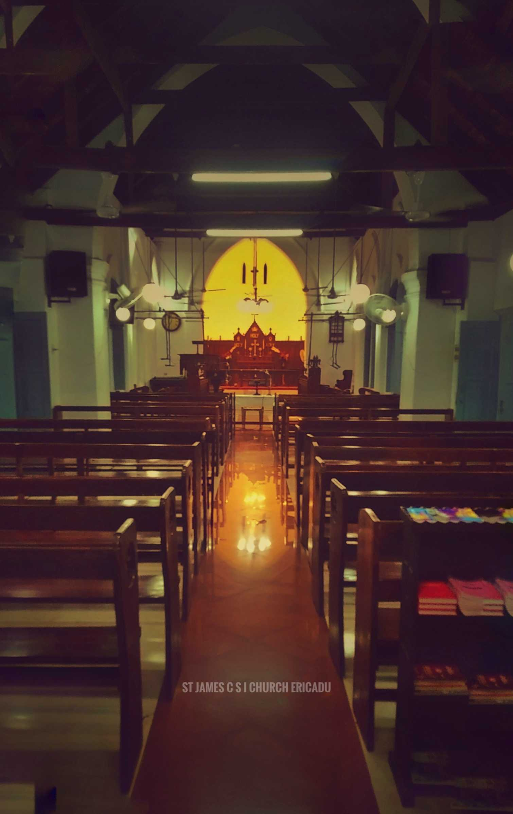

Join our official Telegram group to receive verified job alerts every day between 10:00 AM and 11:00 AM (IST).
The website displays all job opportunities posted within the last 28 days, ensuring you never miss recent openings.
Join Telegram GroupThe Job Portal is an initiative by the Youth Movement of CSI St. James Church, Ericad, Puthuppally, Kottayam. This platform was created with the vision of supporting job seekers within our community and beyond by sharing verified job opportunities.
Our mission is to connect talented individuals with meaningful employment opportunities while fostering growth, integrity, and service to society. Through collective effort and dedication, the youth members actively manage and update this portal to ensure timely and reliable job listings.
We believe in empowering lives through opportunity.
